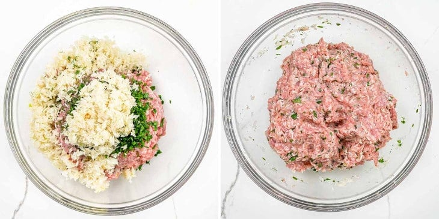
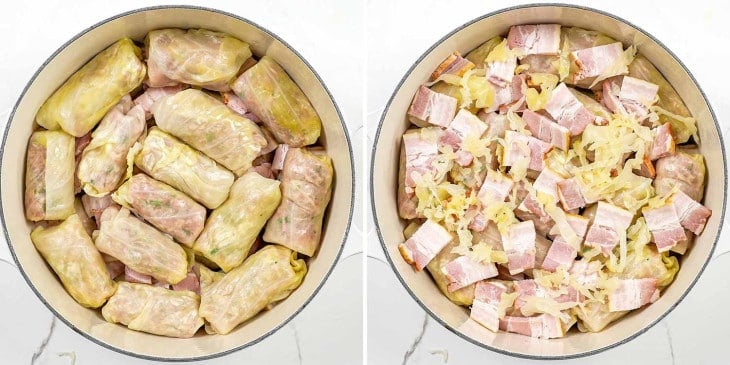
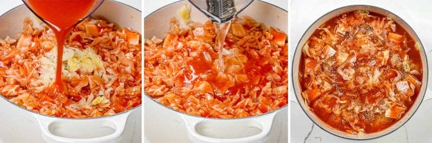

Here’s my mom’s recipe for traditional Romanian Cabbage Rolls (Sarmale) which I’ve been making
for decades.
They’re stuffed with pork and rice and baked with lots of bacon in between. They’re the best cabbage rolls
you
will ever have!
This recipe for Romanian cabbage rolls is tried and true. I’ve made it probably a hundred times, and have rolled
thousands of them! The big difference between Romanian cabbage rolls and others are that we make them with sour
cabbage.
You can find sour cabbage at pretty much all grocery stores sold in jars. You can also find sour
cabbage at your local Polish or Ukrainian stores!
The beauty of using sour cabbage is that you don’t need to boil cabbage or freeze it to soften the leaves.
So
basically there’s very minimal work in prepping the cabbage leaves. But besides that, cabbage rolls made with
sour cabbage pack so much more flavor!
This is my mom’s recipe for sarmale and it’s my favorite. I won’t eat cabbage rolls made any other way. The
other piece that separates Romanian cabbage rolls from the rest is that we add some kind of smoked meat. This
time I used smoked bacon. Now I’ve got your attention, hey?
As I mentioned, there’s very little prep that’s needed to get the cabbage ready for rolling. What I do like to do is soak the sour cabbage in cold water overnight, but usually I forget and I’ll soak it for about an hour while I prep my other ingredients and do other stuff in the kitchen. I do this, to remove some of the salt from the cabbage, as it can be quite salty. Once the cabbage has soaked in water for a bit, you want to take each leaf and cut some of the core from it. However, if you’ve already bought a jar of cabbage leaves, you may not even need to do this. Then I cut each leaf in half, since I like to make my cabbage rolls smaller.
Another thing that sets our cabbage rolls apart is that we actually cook the onion and the rice for a bit before adding it to the meat mixture. So basically you’ll want to sauté the onion in some vegetable oil for about 3 minutes until softened. Then add the rice and toast it for 1 minute. Let it cool while you get the other ingredients ready.
Now, in a large bowl, you’ll want to add the ground pork, salt, pepper, parsley, dill, and the onion mixture. Mix it well with your hands until well combined. Use the salt sparingly since the cabbage leaves are brined.
Now is the time to preheat your oven, so get that going to 375°F (191°C), so that it’s nice and warm when we put our cabbage rolls in.
Fill each leaf with about a ¼ cup of the meat mixture and roll tucking in the ends as you see in the video. Repeat with all the remaining meat and cabbage leaves.
If you have any leftover cabbage leaves you’ll want to chop that up and spread some on the bottom of a large Dutch oven. Then place the cabbage rolls on the chopped cabbage in a single layer. Next, you’ll want to top with bacon, and be generous.
Finish with another layer of cabbage rolls, more bacon and a bit more chopped cabbage. If you like you can also season with some ground pepper.
Now, you’ll need to pour the tomato juice over the cabbage rolls and add additional water as needed. You want to make sure the rolls are completely covered with liquid.
Cover the Dutch oven with a lid or aluminum foil if your pot doesn’t have a lid and transfer it to the oven. Bake for 2 hours, then remove the lid or foil and cook for another 1 to 1.5 hours.
Using sour cabbage is what sets Romanian cabbage rolls apart from the rest. If you can’t find any, then you can use fresh cabbage instead. Follow these steps:
That’s it! You can follow my method for rolling the perfect cabbage rolls by checking out the video in the recipe card.
Check out full recipe here!